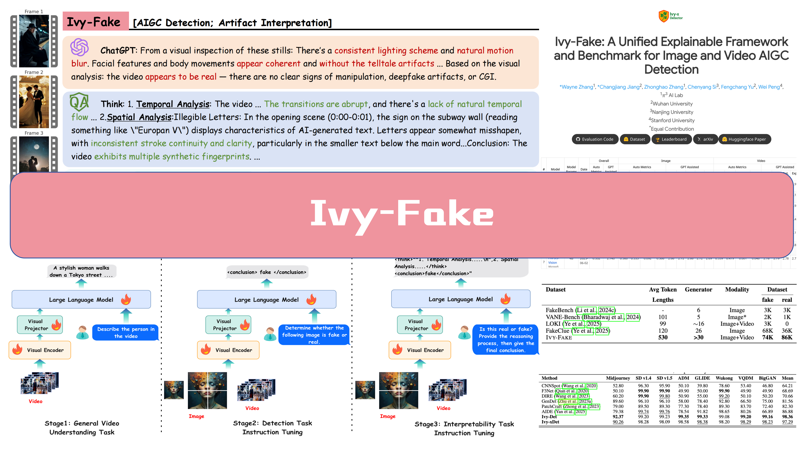
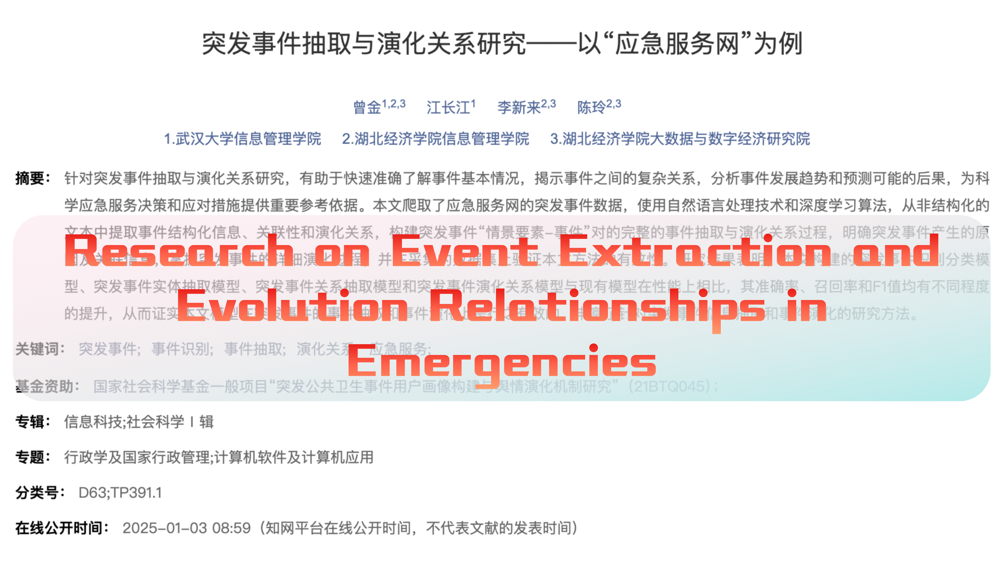
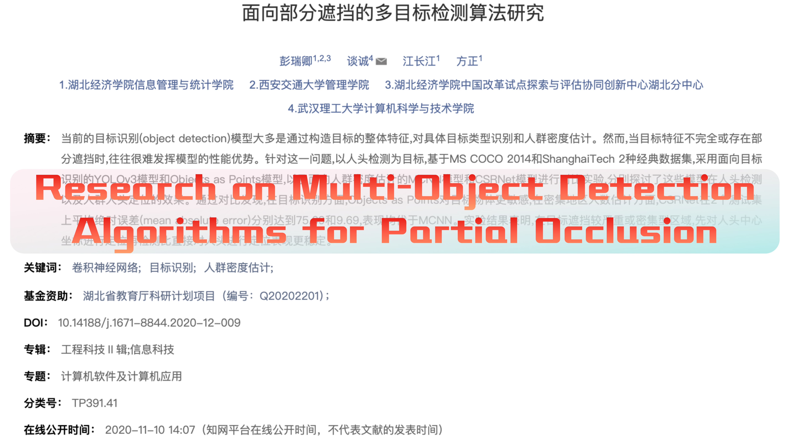

About
Experiences
Jun, 2025 - Now
Research Intern @ Machine Intelligence, Ant Group
Join as a Research Intern, focus on VLA models and MLLM Reasoning.
Mar, 2025 - Jun, 2025
Algorithm Intern @ IEG TuringLab, Tencent
Join as an Algorithm Intern, focus on GUI Agent, LLM Reasoning.
Supervisor: Shaoguo Wen, Junle Wang
Nov, 2024 - Mar, 2025
Algorithm Intern @ Zhipu AI
Join as an Algorithm Intern, focus on Document Memory Agent and ChatGLM (LLM) Long COT Reasoning.
Supervisor: Yankun Huang
 June, 2024 - Aug, 2024
June, 2024 - Aug, 2024
Publications ( / )

IVY-FAKE: A Unified Explainable Framework and Benchmark for Image and Video AIGC Detection
Co-first author | Arxiv 2025

TABDSR: Decompose, Sanitize, and Reason for Complex Numerical Reasoning in Tabular Data
First Author | Submitting to EMNLP 2025

Research on Event Extraction and Evolution Relationships in Emergencies: A Case Study of “Emergency Service Network”
Journal of the China Society
for Scientific and Technical Information, 2024
for Scientific and Technical Information, 2024
Composite Impact Factor (2024): 3.574 | Indexed in CSSCI

Research on Multi-Object Detection Algorithms for Partial Occlusion
Journal of Wuhan University (Engineering Edition), 2020
Composite Impact Factor (2024): 1.987 | Indexed in CSCD